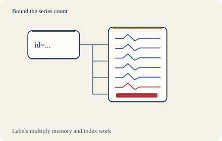

Go deeper · 7 minutes
How metrics systems work
Series count, replication and query work decide the size of a metrics platform.
Open this lesson
One new label fills memory
A latency metric has labels for service, route, region and status. Someone adds request_id. Suddenly almost every request creates a new series. The sample rate did not change much, but the series metadata and index did. In a metrics system, each distinct metric name and label set identifies a time series.
The ingest and storage path
Every label combination creates a series. Follow counted samples from the log into blocks and compaction, then repeat and shift a four-slice query.
Worked example: cardinality and bytes
Each distinct metric name and label set identifies a series. A request_id label can add a new series for almost every request. The theoretical product of label values is an upper bound; observed combinations determine actual cardinality. Payload and metadata have different costs. This worksheet is not a simulated memory allocation.
Labels multiply before samples arrive
- 30,000 series: 100 services × 20 routes × 3 regions × 5 statuses.
- 2,000 samples/s: One sample every 15 seconds. About 3.89 GB over 15 days at 1.5 B/sample.
- Metadata comes too: 10 million active series × 2 KB is about 20 GB, before sample payload.
Do not let queries starve writes
Split long queries into bounded pieces and schedule them fairly. Cache keys need tenant, authorization scope and full query semantics. Immutable blocks do not guarantee immutable results: late data, deletions and evaluation time can change an answer. Use a stable-data cutoff, invalidation or bounded TTL. Replication of recent writes and object storage durability are separate mechanisms. Acknowledging buffered samples does not make them queryable.
Separate query and ingest budgets
- Ingest admission: Bound active series, new series/s and samples/s per tenant.
- Query admission: Bound scanned bytes, time range, concurrency and wall time.
- Keep fresh writes visible: Measure data freshness as well as query p99. A buffered write is not yet queryable.
Key numbers
- Series combinations
- ≈ 30,000. 100 × 20 × 3 × 5 observed combinations
- Samples per second
- ≈ 2,000. 30,000 ÷ 15 s
- Fifteen-day payload
- ≈ 3.89 GB. 2,000 × 1.5 B × 86,400 × 15; before index and replication
Check your reasoning
Think through these questions before opening the lesson. In the game you can test the idea and compare your reasoning.
- Samples/s stays fixed, but a new user-id label creates many short-lived series. Why can memory rise?
- Why does the bill rise when the sample count barely changes? Follow-up: which tenant limit do you add first?
- One window has 10 requests averaging 10 ms; another has 90 averaging 100 ms. What is the combined mean?
- Why keep a durable recent-write log and object blocks? Follow-up: an ingester dies before its next flush.
- A tenant stays under ingest quotas but launches 100 wide queries. Which control bounds its read-side work?
The key point
Budget series, samples, replicated bytes and scanned query work separately.
Practise this idea
- Medium
Fleet telemetry
A freight company has 150,000 trucks that each send a batch of sensor readings every 30 seconds. Dispatchers watch live maps and analysts run reports. You must take in every batch, keep a month of detail cheaply, and survive the moments when thousands of trucks come back online at once.
- Medium
Factory sensors
A factory has thousands of machines, each sending readings many times a second. Engineers open charts of the last hour and last month, and an alarm must fire within seconds when a reading goes out of range. The data grows without end.
- Hard
Metrics platform
Thousands of services send a stream of measurements: CPU, errors, latency. You store them, draw the dashboards and fire the alerts. The platform watching everyone else must never go down first, and one customer creating millions of new series can ruin the bill.
- Hard
Metrics for many customers
Build one metrics platform for 5,000 customers. A tenant can create millions of series or run a costly month-long query by mistake. Your design must preserve useful ingestion and query service for the other tenants, and show the offending customer a clear limit rather than an unexplained gap.